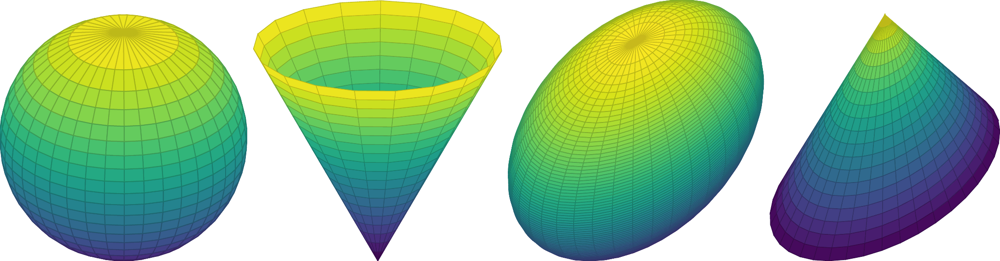
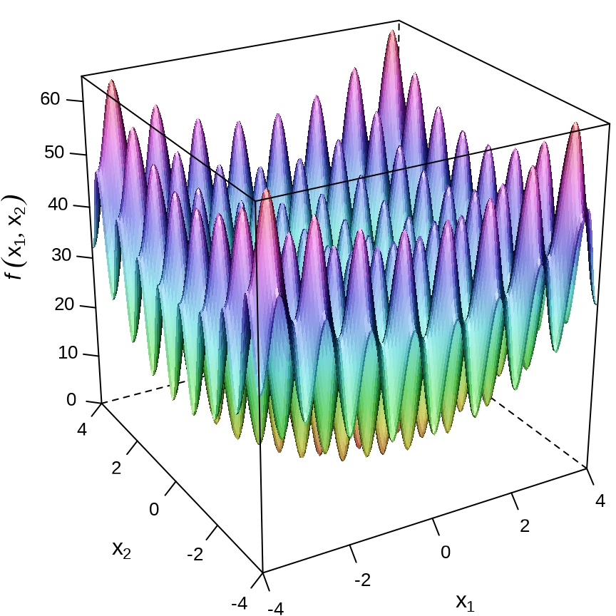
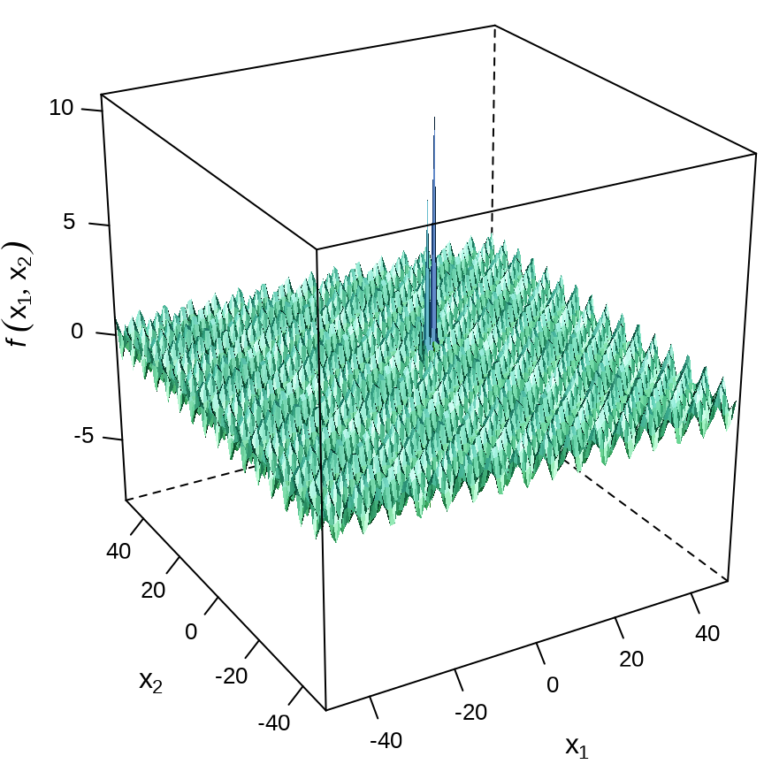
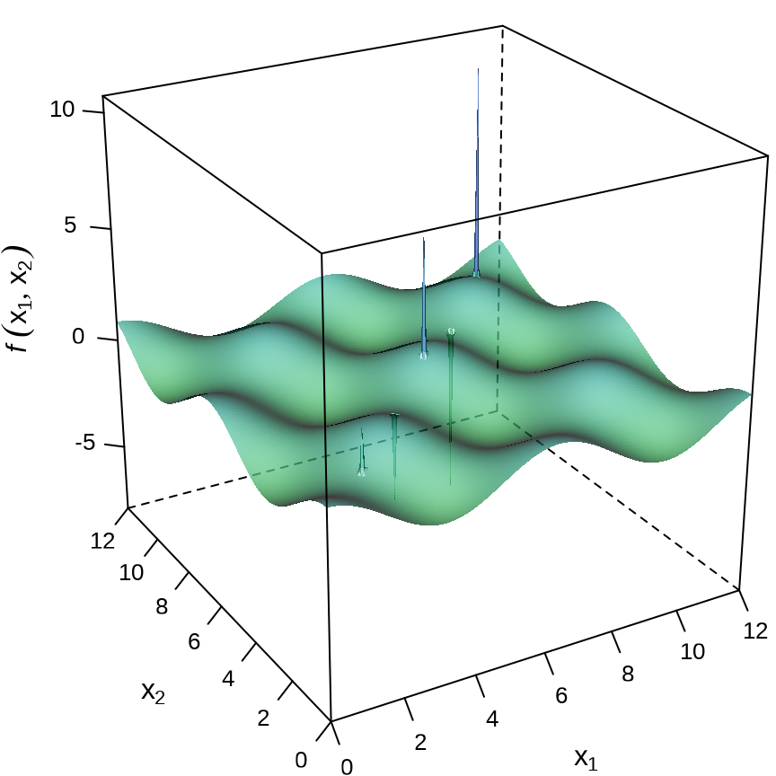
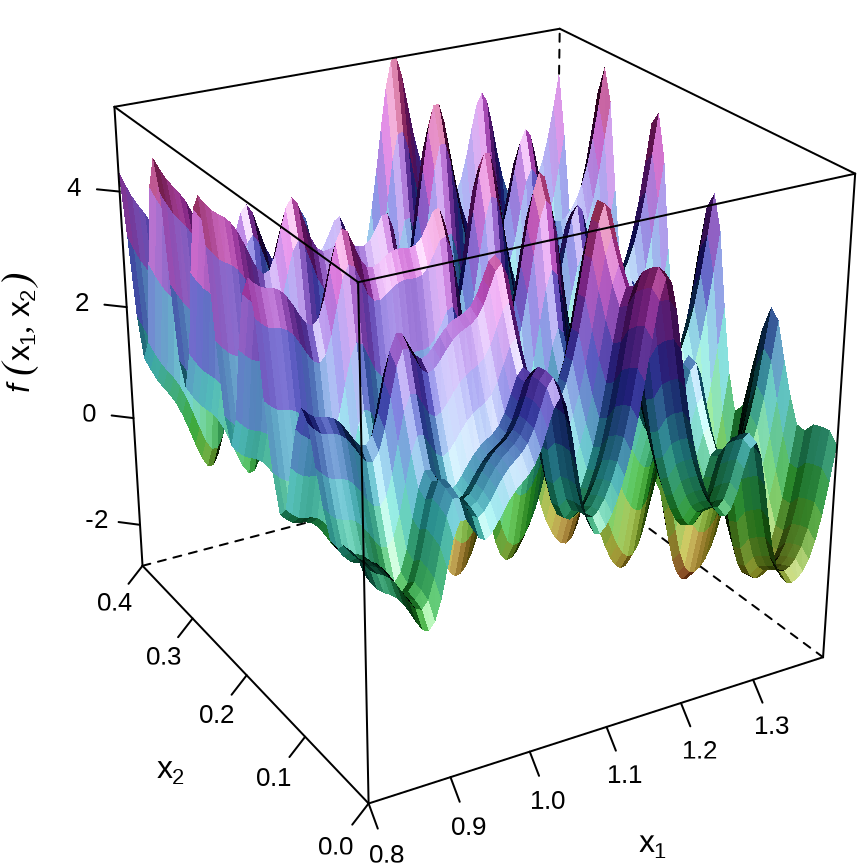

flowchart TB Rglpk --> ROI_Rglpk(ROI.plugin.glpk) ROI_Rglpk --> ROI(ROI) nloptr --> ROI_nloptr(ROI.plugin.nloptr) ROI_nloptr --> ROI(ROI) scs --> ROI_scs(ROI.plugin.scs) ROI_scs --> ROI(ROI) ECOSolveR --> ROI_escs(ROI.plugin.escs) ROI_escs --> ROI(ROI) quadprog --> ROI_quadprog(ROI.plugin.quadprog) ROI_quadprog --> ROI(ROI)
31 数值优化
本章亮点
比较全面地展示各类优化问题的 R 语言实现，其覆盖面之广，远超市面上同类 R 语言书籍。从线性优化到凸优化（包含凸二次优化和凸锥优化），从简单整数线性优化到混合整数非线性优化，再到一般的非线性优化，触及最前沿的热门话题。
对每类优化问题都给出示例及 R 语言实现，涉及 10 余个各类优化器。参考 Lingo 和 1stOpt 等国内外商业优化建模软件的官方示例，也参考开源软件 Octave （语法大量兼容 Matlab 的科学计算软件）的非线性优化示例，给出 R 语言实现。经过对比，发现 R 语言求解器的效果可以达到同类开源和商业软件的水平。
对于 R 语言社区难以求解的复杂优化问题，也都给出了开源替代方案，并总结了实战经验。比如，混合整数非线性优化，通过 rAMPL 包 (Brandao 2023) 连接 AMPL 软件，调用开源的优化求解器 Couenne 求解。R 语言社区的优化建模扩展包相比于商业软件的最大优势是免费易获取，可以随时查找相关 R 包的论文和源码深入研究，了解优化算法的理论和实现过程。
本章介绍五类典型的优化问题及 R 语言求解过程，按从易到难的顺序分别是线性优化、凸二次优化、凸锥优化、非线性优化、整数优化。学习完本章内容，读者可以灵活运用各类软件工具包解决各类标准优化问题。本章内容不涉及优化算法理论，对理论感兴趣的读者可以寻着 R 包参考文献或者相关书籍进一步学习。
除了 R 软件内置一些数值优化求解器，R 语言社区还有大量数值优化方面的函数和 R 包。特别是 ROI 包 (Theußl, Schwendinger, 和 Hornik 2020)，它通过插件包对 20 多个 R 包提供统一的函数调用方式，相当于一个运筹优化方面的基础设施平台，极大地方便学习和使用。
ROI 包通过插件包来实际调用第三方做数值优化的 R 包。Rglpk 包 (Theussl 和 Hornik 2023) 可以求解大规模线性优化、整数线性优化和混合整数线性优化，ROI 包通过插件包 ROI.plugin.glpk 与之连接调用。nloptr 包 (Johnson 2023) 可以求解二次优化和非线性优化，ROI 包通过插件包 ROI.plugin.nloptr 与之连接调用。scs 包 (O’Donoghue 等 2016) 可以求解凸锥优化，ROI 包通过插件包 ROI.plugin.scs 与之连接调用。ECOSolveR 包 (Fu 和 Narasimhan 2023) 可以求解含整数变量约束的凸锥优化，ROI 包通过插件包 ROI.plugin.ecos 与之连接调用。quadprog 包 (S original by Berwin A. Turlach 2019) 可以求解凸二次优化，ROI 包通过插件包 ROI.plugin.quadprog 与之连接调用。本文不能一一概括，相信读者之后可以举一反三。
library(ROI)
library(ROI.plugin.glpk) # 线性和整数线性优化
library(ROI.plugin.nloptr) # 非线性优化
library(ROI.plugin.scs) # 凸锥优化
library(ROI.plugin.ecos) # 可含整数变量的凸锥优化
library(ROI.plugin.quadprog) # 凸二次优化
library(lattice)
# 自定义作图用的调色板
custom_palette <- function(irr, ref, height, saturation = 0.9) {
hsv(
h = height, s = 1 - saturation * (1 - (1 - ref)^0.5),
v = irr
)
}31.1 线性优化
线性优化是指目标函数和约束条件都是线性的优化问题。考虑如下线性优化问题：
\[ \begin{aligned} \min_{\boldsymbol{x}} \quad & -6x_1 -5x_2 \\ \text{s.t.} \quad & \left\{ \begin{array}{l} x_1 + 4x_2 \leq 16\\ 6x_1 + 4x_2 \leq 28\\ 2x_1 - 5x_2 \leq 6 \end{array} \right. \end{aligned} \]
其中，目标函数是 \(-6x_1 -5x_2\)，\(\min\) 表示求目标函数的最小值，\(\boldsymbol{x} = (x_1,x_2)^{\top}\) 表示决策变量，无特殊说明，决策变量都取实数。\(\text{s.t.}\) 是 subject to 的缩写，专指约束条件。上述线性优化问题写成矩阵形式，如下：
\[ \begin{aligned} \min_{\boldsymbol{x}} \quad & \begin{bmatrix} -6 \\ -5 \end{bmatrix} ^{\top} \boldsymbol{x} \\ \text{s.t.} \quad & \left\{ \begin{array}{l} \begin{bmatrix} 1 & 4 \\ 6 & 4 \\ 2 & -5 \end{bmatrix} \boldsymbol{x} \leq \begin{bmatrix} 16 \\ 28 \\ 6 \end{bmatrix} \end{array} \right. \end{aligned} \]
用 \(\boldsymbol{d}\) 表示目标函数的系数向量，\(A\) 表示约束矩阵，\(\boldsymbol{b}\) 表示右手边的向量。上述优化问题用矩阵表示，如下：
\[ \begin{aligned} \min_{\boldsymbol{x}} \quad & \boldsymbol{d}^{\top} \boldsymbol{x} \\ \text{s.t.} \quad & A\boldsymbol{x} \leq \boldsymbol{b} \end{aligned} \]
用 ROI 包提供的一套使用语法表示该线性优化问题，代码如下：
# 定义优化问题
op <- OP(
objective = L_objective(L = c(-6, -5)),
constraints = L_constraint(
L = matrix(c(
1, 4,
6, 4,
2, -5
), ncol = 2, byrow = TRUE),
dir = c("<=", "<=", "<="),
rhs = c(16, 28, 6)
),
types = c("C", "C"),
maximum = FALSE
)
# 优化问题描述
op#> ROI Optimization Problem:
#>
#> Minimize a linear objective function of length 2 with
#> - 2 continuous objective variables,
#>
#> subject to
#> - 3 constraints of type linear.
#> - 0 lower and 0 upper non-standard variable bounds.#> [1] 2.4 3.4#> [1] -31.4函数 OP() 定义一个优化问题，参数如下：
-
objective：指定目标函数，用函数L_objective()表示线性优化中的目标函数，函数名中 L 表示 Linear（线性），包含数值型向量。 -
constraints：指定约束条件，用函数L_constraint()表示线性优化中的约束条件，函数名中 L 表示 Linear（线性），包含约束矩阵 \(A\) ，约束分量的方向可为>=、<=或=，本例中为<=，右手边的向量 \(b\) 。 -
types：指定决策变量的类型，分三种情况，B表示 0-1 变量，字母 B 是 binary 的意思，I表示整型变量，字母 I 是 integer 的意思，C表示数值型变量，字母 C 是 continuous 的意思。本例中，两个变量都是连续型的，types = c("C", "C")。 -
maximum：指定目标函数需要求极大还是极小，默认求极小，取值为逻辑值TRUE或FALSE。
不同类型的目标函数和约束条件组合在一起可以构成非常丰富的优化问题。ROI 包支持的目标函数、约束条件及相应的代码见下表。后续将根据优化问题，逐个介绍用法。
| 目标函数 | 代码 | 约束条件 | 代码 |
|---|---|---|---|
| 线性函数 | L_objective() |
无约束 | 留空 |
| 二次函数 | Q_objective() |
箱式约束 | V_bound() |
| 非线性函数 | F_objective() |
线性约束 | L_constraint() |
| 二次约束 | Q_constraint() |
||
| 锥约束 | C_constraint() |
||
| 非线性约束 | F_constraint() |
31.2 凸二次优化
二次优化分严格凸二次和非严格凸二次优化问题，严格凸要求矩阵对称正定，非严格凸要求矩阵对称半正定。对于矩阵负定的情况，不是凸优化问题，暂不考虑。二次优化的一般形式如下：
\[ \begin{aligned} \min_{\boldsymbol{x}} \quad & \frac{1}{2}\boldsymbol{x}^{\top}D\boldsymbol{x} + \boldsymbol{d}^{\top}\boldsymbol{x} \\ \text{s.t.} \quad & A\boldsymbol{x} \leq \boldsymbol{b} \end{aligned} \]
二次优化不都是凸优化，当且仅当矩阵 \(D\) 半正定时，上述二次优化是凸二次优化，当矩阵 \(D\) 正定时，上述二次优化是严格凸二次优化。下面举个严格凸二次优化的具体例子，令
\[ D = \begin{bmatrix} 2 & -1\\ -1 & 2 \end{bmatrix}, \quad \boldsymbol{d} = \begin{bmatrix} 3 \\ -2 \end{bmatrix}, \quad A = \begin{bmatrix} -1 & -1 \\ 1 & -1 \\ 0 & 1 \end{bmatrix}, \quad \boldsymbol{b} = \begin{bmatrix} -2 \\ 2 \\ 3 \end{bmatrix} \]
即目标函数
\[ Q(x_1,x_2) = x_1^2 + x_2^2 - x_1 x_2 + 3x_1- 2x_2 \]
二次优化中的数据矩阵和向量 \(D,\boldsymbol{d},A,\boldsymbol{b}\) 依次用 Dmat、dvec、Amat、bvec 表示出来。
同样，也是在函数 OP()中传递目标函数，约束条件。在函数 Q_objective() 中定义二次优化的目标函数，字母 Q 是 Quadratic 的意思，表示二次部分，字母 L 是 Linear 的意思，表示线性部分。函数 L_constraint() 的使用同线性优化，不再赘述。根据 ROI 包的使用接口定义的参数，定义目标优化。
op <- OP(
objective = Q_objective(Q = Dmat, L = dvec),
constraints = L_constraint(L = Amat, dir = rep("<=", 3), rhs = bvec),
maximum = FALSE
)
op#> ROI Optimization Problem:
#>
#> Minimize a quadratic objective function of length 2 with
#> - 2 continuous objective variables,
#>
#> subject to
#> - 3 constraints of type linear.
#> - 0 lower and 0 upper non-standard variable bounds.nloptr 包有许多优化求解器，可用于求解二次优化的也有好几个。对于一个目标优化，函数 ROI_applicable_solvers() 可以找到能够求解此优化问题的求解器。
#> [1] "nloptr.cobyla" "nloptr.mma" "nloptr.auglag" "nloptr.isres"
#> [5] "nloptr.slsqp" "quadprog"下面使用其中的 nloptr.slsqp 来求解。
#> [1] -0.08333333#> [1] 0.1666667 1.8333333作为对比，移除线性不等式约束，求解无约束优化问题。目标函数仍然是二次型，但是已经没有线性约束条件，所以不是二次优化问题，再用求解器 nloptr.slsqp 求解的结果已不是无约束优化的解。
#> ROI Optimization Problem:
#>
#> Minimize a quadratic objective function of length 2 with
#> - 2 continuous objective variables,
#>
#> subject to
#> - 0 constraints
#> - 0 lower and 0 upper non-standard variable bounds.#> [1] -1#> [1] 0 1在可行域上画出等高线，标记目标解的位置， 图 31.2 展示无约束和有约束条件下的解。图中橘黄色线围成的三角形区域是可行域，红点表示无约束下求解器 nloptr.slsqp 获得的解 \((0,1)\) ，真正的无约束解是蓝点所在位置为 \((-4/3,1/3)\) ，黄点表示线性约束下求解器 nloptr.slsqp 获得的解 \((1/6,11/6)\) 。所以，不能用二次优化的求解器去求解无约束的二次优化问题。
代码
# 约束解
qp_sol <- nlp$solution
# 无约束解
uc_sol <- nlp2$solution
dat <- expand.grid(x1 = seq(-2, 5.5, length.out = 50),
x2 = seq(-1, 3.5, length.out = 50))
# 二次优化的目标函数
dat$fn <- with(dat, x1^2 + x2^2 - x1 * x2 + 3 * x1 - 2 * x2)
levelplot(fn ~ x1 * x2, data = dat, aspect = .7,
xlab = expression(x[1]), ylab = expression(x[2]),
xlim = c(-2.2, 5.7), ylim = c(-1.1, 3.6),
panel = function(...) {
panel.levelplot(...)
panel.polygon(x = c(2, 5, -1), y = c(0, 3, 3),
border = "orange", lwd = 2, col = "transparent"
)
panel.points(
x = c(uc_sol[1], qp_sol[1], -4/3),
y = c(uc_sol[2], qp_sol[2], 1/3),
lwd = 5, col = c("red", "yellow", "blue"), pch = 19
)
},
# 减少图形的边空
lattice.options = list(
layout.widths = list(
left.padding = list(x = 0, units = "inches"),
right.padding = list(x = 0, units = "inches")
),
layout.heights = list(
bottom.padding = list(x = -1.5, units = "inches"),
top.padding = list(x = -1.5, units = "inches")
)
),
scales = list(
x = list(alternating = 1, tck = c(1, 0)),
y = list(alternating = 1, tck = c(1, 0))
), contour = TRUE, colorkey = TRUE,
col.regions = hcl.colors
)quadprog 包在求解约束条件下的严格凸二次优化问题时，同时给出无约束条件下的解。这个包自定义了一套二次优化问题的符号，查看求解函数 solve.QP() 的说明，略作对应后，求解上述优化问题的代码如下。
#> $solution
#> [1] 0.1666667 1.8333333
#>
#> $value
#> [1] -0.08333333
#>
#> $unconstrained.solution
#> [1] -1.3333333 0.3333333
#>
#> $iterations
#> [1] 2 0
#>
#> $Lagrangian
#> [1] 1.5 0.0 0.0
#>
#> $iact
#> [1] 1其中，返回值的 unconstrained.solution 表示无约束下的解，与预期的解一致，这就没有疑惑了。可见，约束二次优化问题和无约束二次优化问题的求解器不同。
31.3 凸锥优化
31.3.1 锥与凸锥
二维平面上，圆盘和扇面是凸锥。三维空间中，球，圆锥、椭球、椭圆锥都是凸锥，如 图 31.3 所示。

锥定义在对称的矩阵上，凸锥要求矩阵正定。一个 2 阶对称矩阵 \(A\) 是正定的
\[ A = \begin{bmatrix} a_{11} & a_{12} \\ a_{21} & a_{22} \end{bmatrix} \]
意味着 \(a_{11} > 0, a_{22} > 0, a_{12} = a_{21}, a_{11}a_{22} - a_{12}a_{21} > 0\) 。一般地，将 \(n\) 阶半正定的对称矩阵 \(A\) 构成的集合记为 \(\mathcal{K}_{+}^n\) 。
\[ \mathcal{K}_{+}^n = \{A \in \mathbb{R}^{n \times n}|\boldsymbol{x}^{\top}A\boldsymbol{x} \geq 0, ~ \forall \boldsymbol{x} \in \mathbb{R}^n\} \]
目标函数为线性的凸锥优化的一般形式如下：
\[ \begin{aligned} \min_{\boldsymbol{x}} \quad &\boldsymbol{d}^{\top}\boldsymbol{x} \\ \text{s.t.} \quad & A\boldsymbol{x} + \boldsymbol{k} = \boldsymbol{b} \\ & \boldsymbol{k} \in \mathcal{K}. \end{aligned} \]
其中，集合 \(\mathcal{K}\) 是一个非空的封闭凸锥。在一个凸锥里，寻求一个线性目标函数的最小值。专门求解此类问题的 scs 包也在 ROI 包的支持范围内，可以求解的锥优化包括零锥、线性锥、二阶锥、指数锥、幂锥和半正定锥。
下面举个例子说明凸锥，含参对称矩阵 \(A(m_1,m_2,m_3)\) 如下：
\[ A(m_1,m_2,m_3) = \begin{bmatrix} 1 & m_1 & m_2 \\ m_1 & 1 & m_3 \\ m_2 & m_3 & 1 \end{bmatrix}. \]
而 \(\boldsymbol{k} = \boldsymbol{b} - A\boldsymbol{x}\) 是非空封闭凸锥集合 \(\mathcal{K}\) 中的元素。半正定矩阵 \(A\) 生成的集合（凸锥） \(K\) 如下：
\[ K = \{ (m_1,m_2,m_3) \in \mathbb{R}^3 \mid A(m_1,m_2,m_3) \in \mathcal{K}_{+}^3 \}, \]
集合 \(K\) 是有界半正定的，要求含参矩阵 \(A\) 的行列式大于等于 0。 矩阵 \(A\) 的行列式如下：
\[ \det(A(m_1,m_2,m_3)) = - (m_1^2 + m_2^2 + m_3^2 -2m_1 m_2 m_3 -1) \]
集合 \(K\) 的边界可表示为如下方程的解：
\[ m_1^2 + m_2^2 + m_3^2 -2m_1 m_2 m_3 = 1 \]
或等价地表示为如下矩阵形式：
\[ \begin{split}\left[ \begin{array}{c} m_1\\m_2 \end{array}\right]^{\top} \left[\begin{array}{rr} 1 & -m_3\\-m_3 &1 \end{array}\right] \left[\begin{array}{c} m_1\\m_2 \end{array}\right] = 1 - m_3^2. \end{split} \]
当 \(m_3 = 0\) 时，集合 \(K\) 的边界表示平面上的一个单位圆，当 \(m_3 \in [-1, 1]\) ，集合 \(K\) 的边界表示一个椭圆。为了获得一个直观的印象，将集合 \(K\) 的边界绘制出来，如 图 31.3 所示，边界是一个三维曲面，曲面及其内部构成一个凸锥。
代码
# 分两部分绘图
fn1 <- function(x) {
x[1] * x[2] + sqrt(x[1]^2 * x[2]^2 - x[1]^2 - x[2]^2 + 1)
}
fn2 <- function(x) {
x[1] * x[2] - sqrt(x[1]^2 * x[2]^2 - x[1]^2 - x[2]^2 + 1)
}
df2 <- df1 <- expand.grid(
x = seq(-1, 1, length.out = 51),
y = seq(-1, 1, length.out = 51)
)
# 计算函数值
df1$fnxy <- apply(df1, 1, fn1)
df2$fnxy <- apply(df2, 1, fn2)
# 添加分组变量
df1$group <- "1"
df2$group <- "2"
# 合并数据
df <- rbind(df1, df2)
# 绘图
wireframe(
data = df, fnxy ~ x * y, groups = group,
shade = TRUE, drape = FALSE,
xlab = expression(m[1]),
ylab = expression(m[2]),
zlab = expression(m[3]),
scales = list(arrows = FALSE, col = "black"),
shade.colors.palette = custom_palette,
# 减少三维图形的边空
lattice.options = list(
layout.widths = list(
left.padding = list(x = -0.5, units = "inches"),
right.padding = list(x = -1.0, units = "inches")
),
layout.heights = list(
bottom.padding = list(x = -1.5, units = "inches"),
top.padding = list(x = -1.5, units = "inches")
)
),
par.settings = list(axis.line = list(col = "transparent")),
screen = list(z = 30, x = -65, y = 0)
)
31.3.2 零锥
零锥的定义如下：
\[ \mathcal{K}_{zero} = \{0\} \]
常用于表示线性等式约束。
31.3.3 线性锥
线性锥（Linear Cone）的定义如下：
\[ \mathcal{K}_{lin} = \{x \in \mathbb{R}|x \geq 0\} \]
常用于表示线性不等式约束。
31.3.4 二阶锥
二阶锥（Second-order Cone）的定义如下：
\[ \mathcal{K}_{soc}^{n} = \{(t,x) \in \mathbb{R}^n|x \in \mathbb{R}^{n-1}, t\in\mathbb{R},\| x \|_2 \leq t\} \]
常用于凸二次优化问题。考虑如下二阶锥优化 SOCP 问题：
\[ \begin{aligned} \max_{(\boldsymbol{y},t)} \quad & y_1 + y_2 \\ \text{s.t.} \quad & \sqrt{(2 + 3y_1)^2 + (4+5y_2)^2} \leq 6 + 7t \\ & y_1,y_2 \in \mathbb{R}, ~~ t \in (-\infty,9]. \end{aligned} \]
令 \(\boldsymbol{x} = (y_1, y_2, t)^{\top}\) ，\(\boldsymbol{b} = (b_1,b_2,b_3)^\top\)
\[ A = \begin{bmatrix} \boldsymbol{a_1}^{\top}\\ \boldsymbol{a_2}^{\top}\\ \boldsymbol{a_3}^{\top} \end{bmatrix} \]
上述 SOCP 问题的非线性不等式约束等价于
\[ \sqrt{(b_2 - \boldsymbol{a_2}^{\top}\boldsymbol{x})^2 + (b_3 -\boldsymbol{a_3}^{\top}\boldsymbol{x})^2} \leq b_1 - \boldsymbol{a_1}^{\top}\boldsymbol{x} \]
其中，
\[ A = \begin{bmatrix} 0 & 0 & -7 \\ -3 & 0 & 0 \\ 0 & -5 & 0 \end{bmatrix}, \quad \boldsymbol{b} = \begin{bmatrix} 6 \\ 2 \\ 4 \end{bmatrix} \]
scs 包不能求解此类优化问题，下面调用 ECOSolveR 包求解。
library(ROI.plugin.ecos)
op <- OP(
objective = c(1, 1, 0),
constraints = C_constraint(
L = rbind(
c(0, 0, -7),
c(-3, 0, 0),
c(0, -5, 0)
),
cones = K_soc(3), rhs = c(6, 2, 4)
), maximum = TRUE,
bounds = V_bound(ld = -Inf, ui = 3, ub = 9, nobj = 3)
)
sol <- ROI_solve(op, solver = "ecos")
# 最优解
sol$solution#> [1] 19.055671 6.300041 9.000000#> [1] 25.35571对决策变量 \(y_1\) 添加整数约束，则只有 ECOSolveR 包可以求解。
op <- OP(
objective = c(1, 1, 0),
constraints = C_constraint(
L = rbind(
c(0, 0, -7),
c(-3, 0, 0),
c(0, -5, 0)
),
cones = K_soc(3), rhs = c(6, 2, 4)
), maximum = TRUE,
# 决策变量约束
types = c("I", "C", "C"),
bounds = V_bound(ld = -Inf, ui = 3, ub = 9, nobj = 3)
)
sol <- ROI_solve(op, solver = "ecos")
# 最优解
sol$solution#> [1] 19.000000 6.355418 9.000000#> [1] 25.3554231.3.5 指数锥
指数锥（Exponential Cone）的定义如下：
\[ \mathcal{K}_{\text{expp}} = \{(x_1, x_2,x_3) \in \mathbb{R}^3 | x_2 > 0,x_2\exp\big(\frac{x_1}{x_2}\big) \leq x_3\} \cup \{(x_1, 0, x_3) \in \mathbb{R}^3 | x_1 \leq 0, x_3 \geq 0 \} \]
它的对偶如下：
\[ \mathcal{K}_{\text{expd}} = \{(x_1, x_2,x_3) \in \mathbb{R}^3 | x_1 < 0, - x_1\exp\big(\frac{x_2}{x_1}\big) \leq \exp(1)x_3\} \cup \{(0, x_2, x_3) \in \mathbb{R}^3 | x_2 , x_3 \geq 0 \} \]
考虑一个锥优化问题
\[ \begin{aligned} \max_{(\boldsymbol{x}, \boldsymbol{t})} \quad & x_1 + 2 x_2 \\ \text{s.t.} \quad & \exp(7 + 3x_1 + 5 x_2) \leq 9 + 11 t_1 + 12t_2 \\ \quad & x_1,x_2 \in (-\infty,20], ~ t_1,t_2 \in (-\infty, 50] \end{aligned} \]
约束条件 \(\exp(7 + 3x_1 + 5 x_2) \leq 9 + 11 t_1 + 12t_2\) 可以用指数锥来表示
\[ \begin{aligned} u &= 7 + 3y_1 + 5y_2 \\ v &= 1 \\ w &= 9 + 11t_1 + 12t_2 \end{aligned} \]
记 \(\boldsymbol{x} = (y_1,y_2,t_1,t_2)^{\top}\) ，则线性约束矩阵 \(A\) 和约束向量 \(\boldsymbol{b}\) 如下：
\[ A = \begin{bmatrix} -3 & -5 & 0 & 0 \\ 0 & 0 & 0 & 0 \\ 0 & 0 & -11 & -12 \end{bmatrix}, \quad \boldsymbol{b} = \begin{bmatrix} 7 \\ 1 \\ 9 \end{bmatrix} \]
指数锥用函数 K_expp() 表示，锥优化问题的代码如下：
# 目标优化
op <- OP(
objective = c(1, 2, 0, 0),
# 锥约束
constraints = C_constraint(L = rbind(
c(-3, -5, 0, 0),
c(0, 0, 0, 0),
c(0, 0, -11, -12)
), cone = K_expp(1), rhs = c(7, 1, 9)),
bounds = V_bound(ld = -Inf, ub = c(20, 20, 50, 50)),
maximum = TRUE
)
op#> ROI Optimization Problem:
#>
#> Maximize a linear objective function of length 4 with
#> - 4 continuous objective variables,
#>
#> subject to
#> - 3 constraints of type conic.
#> |- 3 conic constraints of type 'expp'
#> - 4 lower and 4 upper non-standard variable bounds.对于锥优化，可以调用 scs 包来求解。
31.3.6 幂锥
一个三维幂锥（Power Cone）的定义如下：
\[ \mathcal{K}_{\text{powp}}^{\alpha} = \{(x_1, x_2,x_3) \in \mathbb{R}^3 | x_1,x_2 \geq 0,x_1^{\alpha}x_2^{1-\alpha} \geq |x_3| \}, \alpha \in [0,1] \]
它的对偶形式如下：
\[ \mathcal{K}_{\text{powp}}^{\alpha} = \Big\{(x_1, x_2,x_3) \in \mathbb{R}^3 | x_1,x_2 \geq 0,\big(\frac{x_1}{\alpha}\big)^{\alpha}\big(\frac{x_2}{1 - \alpha}\big)^{1-\alpha} \geq |x_3| \Big\}, \alpha \in [0,1] \]
考虑如下锥优化问题
\[ \begin{aligned} \min_{\boldsymbol{x}} \quad & 3x_1 + 5 x_2 \\ \text{s.t.} \quad & 5 + x_1 \leq (2 + x_2)^4 \\ \quad & x_1 \geq 0, ~ x_2 \geq 2 \end{aligned} \]
约束条件 \(5 + x_1 \leq (2 + x_2)^4\) 可以重新表示为幂锥
\[ \begin{aligned} u &= 5 + y_1\\ v &= 1 \\ w &= 2 + y_2 \\ \alpha &= 1/4 \end{aligned} \]
记 \(\boldsymbol{x} = (y_1,y_2)^{\top}\) ，约束矩阵和约束向量如下
\[ A = \begin{bmatrix} -1 & 0 \\ 0 & 0 \\ 0 & -1 \end{bmatrix}, \quad \boldsymbol{b} = \begin{bmatrix} 5 \\ 1 \\ 2 \end{bmatrix} \]
幂锥用函数 K_powp() 表示，锥优化问题的代码如下：
A <- rbind(c(-1, 0), c(0, 0), c(0, -1))
cpowp <- C_constraint(L = A, cones = K_powp(1 / 4), rhs = c(5, 1, 2))
op <- OP(
objective = c(3, 5),
constraints = cpowp,
bounds = V_bound(lb = c(0, 2))
)
op#> ROI Optimization Problem:
#>
#> Minimize a linear objective function of length 2 with
#> - 2 continuous objective variables,
#>
#> subject to
#> - 3 constraints of type conic.
#> |- 3 conic constraints of type 'powp'
#> - 1 lower and 0 upper non-standard variable bounds.31.3.7 半正定锥
如果矩阵 \(A\) 是半正定的，记为 \(A \succeq 0\) ，如果矩阵 \(A\) 是正定的，记为 \(A \succ 0\) 。记 \(n\) 阶实对称矩阵的集合为 \(\mathcal{S}^{n}\) 。半正定锥（Positive Semi Definite Cone）的定义如下：
\[ \mathcal{K}_{\text{psd}}^{n} = \{A | A \in \mathcal{S}^{n}, \boldsymbol{x}^{\top}A\boldsymbol{x} \geq 0, \forall \boldsymbol{x} \in \mathbb{R}^n \} \]
考虑如下锥优化问题
\[ \begin{aligned} \min_{\boldsymbol{x}} \quad & x_1 + x_2 - x_3 \\ \text{s.t.} \quad & x_1 \begin{bmatrix} 10 & 3 \\ 3 & 10 \end{bmatrix} + x_2 \begin{bmatrix} 6 & -4 \\ -4 & 10 \end{bmatrix} + x_3 \begin{bmatrix} 8 & 1 \\ 1 & 6 \end{bmatrix} \preceq \begin{bmatrix} 16 & -13 \\ -13 & 60 \end{bmatrix} \\ \quad & x_1,x_2,x_3 \geq 0 \end{aligned} \]
函数 K_psd() 表示半正定锥，函数 vech() 将对称矩阵的上三角部分拉成一个向量。
#> [,1] [,2] [,3]
#> [1,] 3 2 1
#> [2,] 2 3 2
#> [3,] 1 2 3#> [,1]
#> [1,] 3
#> [2,] 2
#> [3,] 1
#> [4,] 3
#> [5,] 2
#> [6,] 3锥优化的表示如下
F1 <- rbind(c(10, 3), c(3, 10))
F2 <- rbind(c(6, -4), c(-4, 10))
F3 <- rbind(c(8, 1), c(1, 6))
F0 <- rbind(c(16, -13), c(-13, 60))
# 目标优化
op <- OP(
objective = L_objective(c(1, 1, -1)),
constraints = C_constraint(
L = vech(F1, F2, F3),
cones = K_psd(3),
rhs = vech(F0)
)
)
op#> ROI Optimization Problem:
#>
#> Minimize a linear objective function of length 3 with
#> - 3 continuous objective variables,
#>
#> subject to
#> - 3 constraints of type conic.
#> |- 3 conic constraints of type 'psd'
#> - 0 lower and 0 upper non-standard variable bounds.仍然调用 scs 包求解器。
31.4 非线性优化
非线性优化按是否带有约束，以及约束是线性还是非线性，分为无约束优化、箱式约束优化、线性约束优化和非线性约束优化。箱式约束可看作是线性约束的特殊情况。
nlm() |
nlminb() |
constrOptim() |
optim() |
|
|---|---|---|---|---|
| 无约束 | 支持 | 支持 | 不支持 | 支持 |
| 箱式约束 | 不支持 | 支持 | 支持 | 支持 |
| 线性约束 | 不支持 | 不支持 | 支持 | 不支持 |
R 软件内置的 stats 包有 4 个数值优化方面的函数，函数 nlm() 可求解无约束优化问题，函数 nlminb() 可求解无约束、箱式约束优化问题，函数 constrOptim() 可求解箱式和线性约束优化。函数 optim() 是通用型求解器，包含多个优化算法，可求解无约束、箱式约束优化问题。尽管这些函数在 R 语言中长期存在，在统计中有广泛的使用，如非线性最小二乘 stats::nls()，极大似然估计 stats4::mle() 和广义最小二乘估计 nlme::gls() 等。但是，这些优化函数的求解能力有重合，使用语法不尽相同，对于非线性约束无能为力，下面仍然主要使用 ROI 包来求解多维非线性优化问题。
31.4.1 一元非线性优化
求如下一维分段非线性函数的最小值，其函数图像见 图 31.5 ，这个函数是不连续的，更不光滑。
\[ f(x) = \begin{cases} 10 & x \in (-\infty,-1] \\ \exp(-\frac{1}{|x-1|}) & x \in (-1,4) \\ 10 & x \in [4, +\infty) \end{cases} \]
代码
函数 optimize() 可以求解一元函数的极值问题，默认求极小值，参数 f 表示目标函数，参数 interval 表示搜索在此区间内最小值。函数返回一个列表，元素 minimum 表示极小值点，objective 表示极值点对应的目标函数值。
#> $minimum
#> [1] 19.99995
#>
#> $objective
#> [1] 10#> $minimum
#> [1] 0.9992797
#>
#> $objective
#> [1] 0值得注意，对于不连续的分段函数，在不同的区间内搜索极值，可能获得不同的结果，可以绘制函数图像帮助选择最小值。
31.4.2 多元隐函数优化
这个优化问题来自 1stOpt 软件的帮助文档，下面利用 R 语言来求该多元隐函数的极值。
\[ \begin{aligned} \min_{\boldsymbol{x}} y = & ~\sin\Big((yx_1 -0.5)^2 + 2x_1 x_2^2 - \frac{y}{10} \Big)\cdot \\ &~\exp\Big(-\Big( \big(x_1 - 0.5 -\exp(-x_2 + y)\big)^2 + x_2^2 - \frac{y}{5} + 3 \Big)\Big) \end{aligned} \]
其中， \(x_1 \in [-1,7],x_2 \in [-2,2]\) 。
对于隐函数 \(f(x_1,x_2,y)=0\) ，常规的做法是先计算隐函数的偏导数，并令偏导数为 0，再求解非线性方程组，得到各个驻点，最后，将驻点代入原方程，比较驻点处函数值，根据优化目标选择最大或最小值。
\[ \begin{aligned} \frac{\partial f(x_1,x_2,y)}{\partial x_1} = 0 \\ \frac{\partial f(x_1,x_2,y)}{\partial x_2} = 0 \end{aligned} \]
如果目标函数很复杂，隐函数偏导数难以计算，可以考虑暴力网格搜索。先估计隐函数值 \(z\) 的大致范围，给定 \(x,y\) 时，计算一元非线性方程的根。
在位置 \((1,2)\) 处函数值为 0.0007368468。
将目标区域网格化，通过一元非线性方程求根的方式获得每个格点处的函数值。
在此基础上，绘制隐函数图像，如 图 31.6 所示，可以获得关于隐函数的大致情况。
代码
# 绘图
wireframe(
data = df, fn ~ x1 * x2,
shade = TRUE, drape = FALSE,
xlab = expression(x[1]), ylab = expression(x[2]),
zlab = list(expression(
italic(f) ~ group("(", list(x[1], x[2]), ")")
), rot = 90),
scales = list(arrows = FALSE, col = "black"),
shade.colors.palette = custom_palette,
# 减少三维图形的边空
lattice.options = list(
layout.widths = list(
left.padding = list(x = -0.5, units = "inches"),
right.padding = list(x = -1.0, units = "inches")
),
layout.heights = list(
bottom.padding = list(x = -1.5, units = "inches"),
top.padding = list(x = -1.5, units = "inches")
)
),
par.settings = list(axis.line = list(col = "transparent")),
screen = list(z = 30, x = -65, y = 0)
)
最后，获得暴力网格搜索的结果，目标函数在 \((2.8,-0.9)\) 处取得最小值 \(-0.02159723\)。总的来说，这是一个近似结果，如果进一步缩小搜索区域，将网格划分得越细，搜索的结果将越接近全局最小值。
将求隐函数极值的问题转为含非线性等式约束的非线性优化问题。
\[ \begin{aligned} \min_{\boldsymbol{x}} \quad & y \\ \text{s.t.} \quad & f(x_1,x_2,y) = 0 \end{aligned} \]
由于等式约束非常复杂，手动计算等式约束的雅可比矩阵不可行，可以用 numDeriv 包的函数 jacobian() 计算等式约束的雅可比矩阵。考虑到本例中仅含有一个等式约束，雅可比矩阵退化为梯度向量，这可以用 numDeriv 包的另一个函数 grad() 计算。
函数 L_objective() 表示含 1 个决策变量的线性目标函数，函数 F_constraint() 表示非线性等式约束。
# 定义优化问题
op <- OP(
objective = L_objective(L = c(0, 0, 1)),
constraints = F_constraint(
# 等式约束
F = list(heq = heq),
dir = "==",
rhs = 0,
# 等式约束的雅可比
J = list(heq.jac = heq.jac)
),
bounds = V_bound(
ld = -Inf, ud = Inf,
li = c(1, 2), ui = c(1, 2),
lb = c(-1, -2), ub = c(7, 2),
nobj = 3L
),
maximum = FALSE # 求最小
)
op#> ROI Optimization Problem:
#>
#> Minimize a linear objective function of length 3 with
#> - 3 continuous objective variables,
#>
#> subject to
#> - 1 constraint of type nonlinear.
#> - 3 lower and 2 upper non-standard variable bounds.将网格搜索的结果作为初值，继续寻找更优的目标函数值。
nlp <- ROI_solve(op,
solver = "nloptr.slsqp", start = c(2.8, -0.9, -0.02159723)
)
# 最优解
nlp$solution#> [1] 2.89826224 -0.85731584 -0.02335409#> [1] -0.02335409可以发现，更优的目标函数值 \(-0.02335\) 在 \((2.898,-0.8573)\) 取得。
31.4.3 多元无约束优化
31.4.3.1 示例 1
Rastrigin 函数是一个 \(n\) 维优化问题测试函数。
\[ \min_{\boldsymbol{x}} \sum_{i=1}^{n}\big(x_i^2 - 10 \cos(2\pi x_i) + 10\big) \]
计算函数值的 R 代码如下：
绘制二维情形下的 Rastrigin 函数图像，如 图 31.7 所示，这是一个多模态的函数，有许多局部极小值。如果采用 BFGS 算法寻优容易陷入局部极值点。
代码
df <- expand.grid(
x = seq(-4, 4, length.out = 151),
y = seq(-4, 4, length.out = 151)
)
df$fnxy <- apply(df, 1, fn)
wireframe(
data = df, fnxy ~ x * y,
shade = TRUE, drape = FALSE,
xlab = expression(x[1]),
ylab = expression(x[2]),
zlab = list(expression(
italic(f) ~ group("(", list(x[1], x[2]), ")")
), rot = 90),
scales = list(arrows = FALSE, col = "black"),
shade.colors.palette = custom_palette,
# 减少三维图形的边空
lattice.options = list(
layout.widths = list(
left.padding = list(x = -0.5, units = "inches"),
right.padding = list(x = -1.0, units = "inches")
),
layout.heights = list(
bottom.padding = list(x = -1.5, units = "inches"),
top.padding = list(x = -1.5, units = "inches")
)
),
par.settings = list(axis.line = list(col = "transparent")),
screen = list(z = 30, x = -65, y = 0)
)

不失一般性，考虑函数维数 \(n=20\) ，决策变量 \(x_i \in [-50,50], i = 1,2,\ldots,n\) 的情况。
调全局优化器求解优化问题。
#> [1] 0 0 0 0 0 0 0 0 0 0 0 0 0 0 0 0 0 0 0 0#> [1] 0代码
# R 语言内置的非线性优化函数
# 无约束
nlm(f = fn, p = rep(1, 20))
optim(par = rep(1, 20), fn = fn, method = "BFGS")
optim(par = rep(1, 20), fn = fn, method = "Nelder-Mead")
# 箱式约束
optim(par = rep(1, 20), fn = fn,
lower = -50, upper = 50, method = "L-BFGS-B")
nlminb(start = rep(1, 20), objective = fn, lower = -50, upper = 50)
constrOptim(
theta = rep(1, 20), f = fn, grad = NULL,
ui = rbind(diag(rep(1, 20)), diag(rep(-1, 20))),
ci = c(rep(-50, 20), rep(-50, 20))
)31.4.3.2 示例 2
下面这个优化问题来自 1stOpt 软件帮助手册，是一个无约束非线性优化问题，它的目标函数非常复杂，一般的求解器都无法求解。最优解在 \((7.999982, 7.999982)\) 取得，目标函数值为 -7.978832。
\[ \begin{aligned} & \min_{\boldsymbol{x}} ~ \cos(x_1)\cos(x_2) - \sum_{i=1}^{5}\Big( (-1)^i \cdot i \cdot 2 \cdot \exp\big(-500 \cdot ( (x_1 - i \cdot 2)^2 + (x_2 - i\cdot 2)^2 ) \big) \Big) \end{aligned} \]
目标函数分两步计算，先计算累加部分的通项，然后代入计算目标函数。
直观起见，绘制目标函数在区域 \([-50, 50] \times [-50, 50]\) 内的图像，如 图 31.8 (a) 所示，可以看到几乎没有变化的梯度，给寻优过程带来很大困难。再将区域 \([0, 12] \times [0, 12]\) 上的三维图像绘制出来，如 图 31.8 (b) 所示，可见，有不少局部陷阱，且分布在 \(x_2 = x_1\) 的直线上。
代码
df <- expand.grid(
x = seq(-50, 50, length.out = 101),
y = seq(-50, 50, length.out = 101)
)
df$fnxy <- apply(df, 1, fn)
wireframe(
data = df, fnxy ~ x * y,
shade = TRUE, drape = FALSE,
xlab = expression(x[1]),
ylab = expression(x[2]),
zlab = list(expression(
italic(f) ~ group("(", list(x[1], x[2]), ")")
), rot = 90),
scales = list(arrows = FALSE, col = "black"),
shade.colors.palette = custom_palette,
# 减少三维图形的边空
lattice.options = list(
layout.widths = list(
left.padding = list(x = -0.5, units = "inches"),
right.padding = list(x = -1.0, units = "inches")
),
layout.heights = list(
bottom.padding = list(x = -1.5, units = "inches"),
top.padding = list(x = -1.5, units = "inches")
)
),
par.settings = list(axis.line = list(col = "transparent")),
screen = list(z = 30, x = -65, y = 0)
)
df <- expand.grid(
x = seq(0, 12, length.out = 151),
y = seq(0, 12, length.out = 151)
)
df$fnxy <- apply(df, 1, fn)
wireframe(
data = df, fnxy ~ x * y,
shade = TRUE, drape = FALSE,
xlab = expression(x[1]),
ylab = expression(x[2]),
zlab = list(expression(
italic(f) ~ group("(", list(x[1], x[2]), ")")
), rot = 90), alpha = 0.75,
scales = list(arrows = FALSE, col = "black"),
shade.colors.palette = custom_palette,
# 减少三维图形的边空
lattice.options = list(
layout.widths = list(
left.padding = list(x = -0.5, units = "inches"),
right.padding = list(x = -1.0, units = "inches")
),
layout.heights = list(
bottom.padding = list(x = -1.5, units = "inches"),
top.padding = list(x = -1.5, units = "inches")
)
),
par.settings = list(axis.line = list(col = "transparent")),
screen = list(z = 30, x = -65, y = 0)
)


不失一般性，下面考虑 \(x_1,x_2 \in [-50,50]\) ，面对如此复杂的函数，调用全局优化器 nloptr.directL 寻优。
op <- OP(
objective = F_objective(fn, n = 2L),
bounds = V_bound(ld = -50, ud = 50, nobj = 2L)
)
nlp <- ROI_solve(op, solver = "nloptr.directL")
nlp$solution#> [1] 0.00000 22.22222#> [1] -0.9734211结果还是陷入局部最优解。运筹优化方面的商业软件，著名的有 Lingo 和 Matlab，下面采用 Lingo 20 求解，Lingo 代码如下：
SETS:
P/1..5/;
Endsets
Min=@cos(x1) * @cos(x2) - @Sum(P(j): (-1)^j * j * 2 * @exp(-500 * ((x1 - j * 2)^2 + (x2 - j * 2)^2)));
@Bnd(-50, x1, 50);
@Bnd(-50, x2, 50);启用全局优化求解器后，在 \((x_1 = 7.999982, x_2 = 7.999982)\) 取得最小值 -7.978832。而默认未启用全局优化求解器的情况下，在 \((x_1 = 18.84956, x_2 = -40.84070)\) 取得局部极小值 -1.000000。
在这种情况下，数值优化算法遇到瓶颈，可以采用一些全局随机优化算法，比如 GA 包 (Scrucca 2013) 实现的遗传算法。经过对参数的一些调优，可以获得与商业软件几乎一样的结果。
nlp <- GA::ga(
type = "real-valued",
fitness = function(x) -fn(x),
lower = c(0, 0), upper = c(12, 12),
popSize = 500, maxiter = 100,
monitor = FALSE, seed = 20232023
)
# 最优解
nlp@solution#> x1 x2
#> [1,] 7.999982 7.999981#> [1] 7.978832其中，参数 type 指定决策变量的类型，type = "real-valued" 表示目标函数中的决策变量是实值连续的，参数 fitness 是目标函数，函数 ga() 对目标函数求极大，所以，对当前优化问题，添加了一个负号。 参数 popSize 控制种群大小，值越大，运行时间越长，搜索范围越广，获得的全局优化解越好。对于复杂的优化问题，可以不断增加种群大小来寻优，直至增加种群大小也不能获得更好的解。参数 maxiter 控制种群进化的次数，值越大，搜索次数可以越多，获得的解越好。参数 popSize 的影响大于参数 maxiter ，减少陷入局部最优解（陷阱）的可能。根据已知条件尽可能缩小可行域，以减少种群数量，进而缩短算法迭代时间。
31.4.4 多元箱式约束优化
有如下带箱式约束的多元非线性优化问题，该示例来自函数 nlminb() 的帮助文档，如果没有箱式约束，全局极小值点在 \((1,1,\cdots,1)\) 处取得。
\[ \begin{aligned} \min_{\boldsymbol{x}} \quad & (x_1 - 1)^2 + 4\sum_{i =1}^{n -1}(x_{i+1} -x_i^2)^2 \\ \text{s.t.} \quad & 2 \leq x_1,x_2,\cdots,x_n \leq 4 \end{aligned} \]
R 语言编码的函数代码如下：
在二维的情形下，可以绘制目标函数的三维图像，见 图 31.9 ，函数曲面和香蕉函数有些相似。
代码
dat <- expand.grid(
x1 = seq(from = 0, to = 4, length.out = 41),
x2 = seq(from = 0, to = 4, length.out = 41)
)
dat$fn <- apply(dat, 1, fn)
wireframe(
data = dat, fn ~ x1 * x2,
shade = TRUE, drape = FALSE,
xlab = expression(x[1]), ylab = expression(x[2]),
zlab = list(expression(
italic(f) ~ group("(", list(x[1], x[2]), ")")
), rot = 90),
scales = list(arrows = FALSE, col = "black"),
shade.colors.palette = custom_palette,
# 减少三维图形的边空
lattice.options = list(
layout.widths = list(
left.padding = list(x = -0.5, units = "inches"),
right.padding = list(x = -1.0, units = "inches")
),
layout.heights = list(
bottom.padding = list(x = -1.5, units = "inches"),
top.padding = list(x = -1.5, units = "inches")
)
),
par.settings = list(axis.line = list(col = "transparent")),
screen = list(z = 30, x = -65, y = 0)
)Base R 有 3 个函数可以求解这个优化问题，分别是 nlminb() 、constrOptim()和optim() ，因此，不妨在这个示例上，用这 3 个函数分别求解该优化问题，介绍它们的用法，最后，介绍 ROI 包实现的方法。这个优化问题的目标函数是 \(n\) 维非线性的，不失一般性，又不让问题变得太过简单，下面考虑 25 维的情况，
31.4.4.1 nlminb()
函数 nlminb() 参数 start 指定迭代初始值，参数 objective 指定目标函数，参数 lower 和 upper 分别指定箱式约束中的下界和上界。给定初值 \((3, 3, \cdots, 3)\)，下界 \((2,2,\cdots,2)\) 和上界 \((4,4,\cdots,4)\) 。nlminb() 帮助文档说该函数出于历史兼容性的原因尚且存在，一般来说，这个函数会一直维护下去的。
#> $par
#> [1] 2.000000 2.000000 2.000000 2.000000 2.000000 2.000000 2.000000 2.000000
#> [9] 2.000000 2.000000 2.000000 2.000000 2.000000 2.000000 2.000000 2.000000
#> [17] 2.000000 2.000000 2.000000 2.000000 2.000000 2.000000 2.000000 2.109093
#> [25] 4.000000
#>
#> $objective
#> [1] 368.1059
#>
#> $convergence
#> [1] 0
#>
#> $iterations
#> [1] 6
#>
#> $evaluations
#> function gradient
#> 10 177
#>
#> $message
#> [1] "relative convergence (4)"从返回结果来看，求解过程成功收敛，最优解的前 23 个决策变量取值为 2，在箱式约束的边界上，第 24 个分量没有边界上，而在内部，第 25 个决策变量取值为 4，也在边界上。目标函数值为 368.1059。
31.4.4.2 constrOptim()
使用 constrOptim() 函数求解，默认求极小，需将箱式或线性不等式约束写成矩阵形式，即 \(Ax \geq b\) 的形式，参数 ui 是 \(k \times n\) 的约束矩阵 \(A\)，ci 是右侧 \(k\) 维约束向量 \(b\)。以上面的优化问题为例，将箱式约束 \(2 \leq x_1,x_2 \leq 4\) 转化为矩阵形式，约束矩阵和向量分别为：
\[ A = \begin{bmatrix} 1 & 0 \\ 0 & 1 \\ -1 & 0 \\ 0 & -1 \end{bmatrix}, \quad b = \begin{bmatrix} 2 \\ 2 \\ -4 \\ -4 \end{bmatrix} \]
constrOptim(
theta = rep(3, 25), # 初始值
f = fn, # 目标函数
method = "Nelder-Mead", # 没有提供梯度，则必须用 Nelder-Mead 方法
ui = rbind(diag(rep(1, 25)), diag(rep(-1, 25))),
ci = c(rep(2, 25), rep(-4, 25))
)#> $par
#> [1] 2.006142 2.002260 2.003971 2.003967 2.004143 2.004255 2.001178 2.002990
#> [9] 2.003883 2.006029 2.017345 2.009236 2.000949 2.007793 2.025831 2.007896
#> [17] 2.004514 2.004381 2.008771 2.015695 2.005803 2.009127 2.017988 2.257782
#> [25] 3.999846
#>
#> $value
#> [1] 378.4208
#>
#> $counts
#> function gradient
#> 12048 NA
#>
#> $convergence
#> [1] 1
#>
#> $message
#> NULL
#>
#> $outer.iterations
#> [1] 25
#>
#> $barrier.value
#> [1] -0.003278963返回结果中 convergence = 1 表示迭代次数到达默认的极限 maxit = 500 。参考函数 nlminb() 的求解结果，可知还没有收敛。如果没有提供梯度，则必须用 Nelder-Mead 方法，下面增加迭代次数到 1000。
constrOptim(
theta = rep(3, 25), # 初始值
f = fn, # 目标函数
method = "Nelder-Mead",
control = list(maxit = 1000),
ui = rbind(diag(rep(1, 25)), diag(rep(-1, 25))),
ci = c(rep(2, 25), rep(-4, 25))
)#> $par
#> [1] 2.000081 2.000142 2.001919 2.000584 2.000007 2.000003 2.001097 2.001600
#> [9] 2.000207 2.000042 2.000250 2.000295 2.000580 2.002165 2.000453 2.000932
#> [17] 2.000456 2.000363 2.000418 2.000474 2.009483 2.001156 2.003173 2.241046
#> [25] 3.990754
#>
#> $value
#> [1] 370.8601
#>
#> $counts
#> function gradient
#> 18036 NA
#>
#> $convergence
#> [1] 1
#>
#> $message
#> NULL
#>
#> $outer.iterations
#> [1] 19
#>
#> $barrier.value
#> [1] -0.003366467结果有改善，目标函数值从 378.4208 减小到 370.8601，但还是没有收敛，可见 Nelder-Mead 方法在这个优化问题上收敛速度比较慢。下面考虑调用基于梯度的 BFGS 优化算法，这得先计算出来目标函数的梯度。
# 输入 n 维向量，输出 n 维向量
gr <- function(x) {
n <- length(x)
c(2 * (x[1] - 2), rep(0, n - 1))
+8 * c(0, x[-1] - x[-n]^2)
-16 * c(x[-n], 0) * c(x[-1] - x[-n]^2, 0)
}
constrOptim(
theta = rep(3, 25), # 初始值
f = fn, # 目标函数
grad = gr,
method = "BFGS",
control = list(maxit = 1000),
ui = rbind(diag(rep(1, 25)), diag(rep(-1, 25))),
ci = c(rep(2, 25), rep(-4, 25))
)#> $par
#> [1] 2.000000 2.000000 2.000000 2.000000 2.000000 2.000000 2.000000 2.000000
#> [9] 2.000000 2.000000 2.000000 2.000000 2.000000 2.000000 2.000000 2.000000
#> [17] 2.000000 2.000000 2.000000 2.000000 2.000000 2.000000 2.000000 2.000001
#> [25] 3.000000
#>
#> $value
#> [1] 373
#>
#> $counts
#> function gradient
#> 3721 464
#>
#> $convergence
#> [1] 0
#>
#> $message
#> NULL
#>
#> $outer.iterations
#> [1] 3
#>
#> $barrier.value
#> [1] -0.003327104从结果来看，虽然已经收敛，但相比于 Nelder-Mead 方法，目标函数值变大了，可见已陷入局部最优解。
31.4.4.3 optim()
下面再使用函数 optim() 提供的 L-BFGS-B 算法求解优化问题。
optim(
par = rep(3, 25), fn = fn, gr = NULL, method = "L-BFGS-B",
lower = rep(2, 25), upper = rep(4, 25)
)#> $par
#> [1] 2.000000 2.000000 2.000000 2.000000 2.000000 2.000000 2.000000 2.000000
#> [9] 2.000000 2.000000 2.000000 2.000000 2.000000 2.000000 2.000000 2.000000
#> [17] 2.000000 2.000000 2.000000 2.000000 2.000000 2.000000 2.000000 2.109093
#> [25] 4.000000
#>
#> $value
#> [1] 368.1059
#>
#> $counts
#> function gradient
#> 6 6
#>
#> $convergence
#> [1] 0
#>
#> $message
#> [1] "CONVERGENCE: REL_REDUCTION_OF_F <= FACTR*EPSMCH"发现结果和函数 nlminb() 的结果差不多了。
optim(
par = rep(3, 25), fn = fn, gr = gr, method = "L-BFGS-B",
lower = rep(2, 25), upper = rep(4, 25)
)#> $par
#> [1] 2 2 2 2 2 2 2 2 2 2 2 2 2 2 2 2 2 2 2 2 2 2 2 2 3
#>
#> $value
#> [1] 373
#>
#> $counts
#> function gradient
#> 2 2
#>
#> $convergence
#> [1] 0
#>
#> $message
#> [1] "CONVERGENCE: NORM OF PROJECTED GRADIENT <= PGTOL"然而，当在函数 optim() 里提供梯度信息的时候，虽然目标函数及梯度的计算次数变少了，求解速度提升了，但是最优解反而变差了，最优解和在函数 constrOptim() 中设置 method = "BFGS" 算法基本一致。
31.4.4.4 ROI 包
下面通过 ROI 包，分别调用求解器 nloptr.lbfgs 和 nloptr.directL ，发现前者同样陷入局部最优解，而后者可以获得与 nlminb() 函数一致的结果。
op <- OP(
objective = F_objective(fn, n = 25L, G = gr),
bounds = V_bound(ld = 2, ud = 4, nobj = 25L)
)
nlp <- ROI_solve(op, solver = "nloptr.lbfgs", start = rep(3, 25))
# 目标函数值
nlp$objval#> [1] 373#> [1] 2 2 2 2 2 2 2 2 2 2 2 2 2 2 2 2 2 2 2 2 2 2 2 2 3调全局优化算法。
#> [1] 368.1061#> [1] 2.000000 2.000000 2.000000 2.000000 2.000000 2.000000 2.000000 2.000000
#> [9] 2.000000 2.000000 2.000000 2.000000 2.000000 2.000000 2.000000 2.000000
#> [17] 2.000000 2.000000 2.000000 2.000000 2.000000 2.000000 2.000000 2.109093
#> [25] 4.00000031.4.5 多元线性约束优化
对于带线性约束的多元非线性优化问题，Base R 提供函数 constrOptim() 来求解，下面的示例来自其帮助文档，这是一个带线性约束的二次规划问题。
\[ \begin{aligned} \min_{\boldsymbol{x}} \quad & - \begin{bmatrix} 0 \\ 5 \\ 0 \end{bmatrix}^{\top} \boldsymbol{x} +\frac{1}{2} \boldsymbol{x}^{\top}\boldsymbol{x} \\ \text{s.t.} \quad & \begin{bmatrix} -4 & 2 & 0 \\ -3 & 1 & -2 \\ 0 & 0 & 1 \end{bmatrix}^{\top}\boldsymbol{x} \geq \begin{bmatrix} -8 \\ 2 \\ 0 \end{bmatrix} \end{aligned} \]
fQP <- function(x) {
-sum(c(0, 5, 0) * x) + 0.5 * sum(x * x)
}
Amat <- matrix(c(-4, -3, 0, 2, 1, 0, 0, -2, 1),
ncol = 3, nrow = 3, byrow = FALSE
)
bvec <- c(-8, 2, 0)
# 目标函数的梯度
gQP <- function(x) {
-c(0, 5, 0) + x
}
constrOptim(
theta = c(2, -1, -1),
f = fQP, g = gQP,
ui = t(Amat), ci = bvec
)#> $par
#> [1] 0.4761908 1.0476188 2.0952376
#>
#> $value
#> [1] -2.380952
#>
#> $counts
#> function gradient
#> 406 81
#>
#> $convergence
#> [1] 0
#>
#> $message
#> NULL
#>
#> $outer.iterations
#> [1] 3
#>
#> $barrier.value
#> [1] -0.0006243894在上一节，箱式约束可以看作线性约束的一种特殊情况，ROI 包是支持箱式、线性、二次、锥和非线性约束的。因此，下面给出调用 ROI 包求解上述优化问题的代码。
Dmat <- diag(rep(1,3))
dvec <- c(0, 5, 0)
op <- OP(
objective = Q_objective(Q = Dmat, L = -dvec),
constraints = L_constraint(L = t(Amat), dir = rep(">=", 3), rhs = bvec),
maximum = FALSE
)
nlp <- ROI_solve(op, solver = "nloptr.slsqp", start = c(0, 1, 2))
# 最优解
nlp$solution#> [1] 0.4761905 1.0476190 2.0952381#> [1] -2.380952可见输出结果与函数 constrOptim() 是一致的。
31.4.6 多元非线性约束优化
nloptr 包的非线性优化能力覆盖开源优化软件 Octave 和 Ipopt 。通过插件包 ROI.plugin.nloptr，ROI 包可以调用 nloptr 包内置的所有求解器，常用的求解器见下表。表中从优化器类型（局部还是全局优化器），支持的约束条件类型（箱式还是非线性），是否需要提供目标函数的梯度、黑塞和约束条件的雅可比矩阵信息等方面归纳各个求解器的能力。
| 求解器 | 类型 | 约束 | 梯度 | 黑塞 | 雅可比 |
|---|---|---|---|---|---|
nloptr.lbfgs |
局部 | 箱式 | 需要 | 不需要 | 不需要 |
nloptr.slsqp |
局部 | 非线性 | 需要 | 不需要 | 需要 |
nloptr.auglag |
局部 | 非线性 | 需要 | 不需要 | 需要 |
nloptr.directL |
全局 | 箱式 | 不需要 | 不需要 | 不需要 |
nloptr.isres |
全局 | 非线性 | 不需要 | 不需要 | 不需要 |
31.4.6.1 非线性等式约束
下面这个示例来自 Octave 软件的非线性优化帮助文档，Octave 中的函数 sqp() 使用序列二次优化求解器（successive quadratic programming solver）求解非线性优化问题，示例中该优化问题包含多个非线性等式约束。
\[ \begin{aligned} \min_{\boldsymbol{x}} \quad & \exp\big(\prod_{i=1}^{5} x_i\big) - \frac{1}{2}(x_1^3 + x_2^3 + 1)^2 \\ \text{s.t.} \quad & \left\{ \begin{array}{l} \sum_{i=1}^{5}x_i^2 - 10 = 0 \\ x_2 x_3 - 5x_4 x_5 = 0 \\ x_1^3 + x_2^3 + 1 = 0 \end{array} \right. \end{aligned} \]
目标函数是非线性的，有 5 个变量，约束条件也是非线性的，有 3 个等式约束。先手动计算目标函数的梯度，等式约束的雅可比矩阵。
# 目标函数
fn <- function(x) {
exp(prod(x)) - 0.5 * (x[1]^3 + x[2]^3 + 1)^2
}
# 目标函数的梯度
gr <- function(x) {
c(
exp(prod(x)) * prod(x[-1]) - 3 * (x[1]^3 + x[2]^3 + 1) * x[1]^2,
exp(prod(x)) * prod(x[-2]) - 3 * (x[1]^3 + x[2]^3 + 1) * x[2]^2,
exp(prod(x)) * prod(x[-3]),
exp(prod(x)) * prod(x[-4]),
exp(prod(x)) * prod(x[-5])
)
}
# 等式约束
heq <- function(x) {
c(
sum(x^2) - 10,
x[2] * x[3] - 5 * x[4] * x[5],
x[1]^3 + x[2]^3 + 1
)
}
# 等式约束的雅可比矩阵
heq.jac <- function(x) {
matrix(c(2 * x[1], 2 * x[2], 2 * x[3], 2 * x[4], 2 * x[5],
0, x[3], x[2], -5 * x[5], -5 * x[4],
3 * x[1]^2, 3 * x[2]^2, 0, 0, 0),
ncol = 5, byrow = TRUE
)
}在 OP() 函数里定义目标优化的各个成分。
# 定义目标优化
op <- OP(
# 5 个决策变量
objective = F_objective(F = fn, n = 5L, G = gr),
constraints = F_constraint(
F = list(heq = heq),
dir = "==",
rhs = 0,
# 等式约束的雅可比矩阵
J = list(heq.jac = heq.jac)
),
bounds = V_bound(ld = -Inf, ud = Inf, nobj = 5L),
maximum = FALSE # 求最小
)
op#> ROI Optimization Problem:
#>
#> Minimize a nonlinear objective function of length 5 with
#> - 5 continuous objective variables,
#>
#> subject to
#> - 1 constraint of type nonlinear.
#> - 5 lower and 0 upper non-standard variable bounds.调用 SQP（序列二次优化） 求解器 nloptr.slsqp 。
nlp <- ROI_solve(op,
solver = "nloptr.slsqp",
start = c(-1.8, 1.7, 1.9, -0.8, -0.8)
)
# 最优解
nlp$solution#> [1] -1.7171435 1.5957096 1.8272458 -0.7636431 -0.7636431#> [1] 0.05394985计算结果和 Octave 的示例一致。
31.4.6.2 多种非线性约束
- 非线性等式约束
- 非线性不等式约束，不等式约束包含等号
- 箱式约束
此优化问题来源于 Ipopt 官网的帮助文档，约束条件比较复杂。提供的初始值为 \(x_0 = (1,5,5,1)\)，最优解为 \(x_{\star} = (1.00000000,4.74299963,3.82114998,1.37940829)\)。优化问题的具体内容如下：
\[ \begin{aligned} \min_{\boldsymbol{x}} & \quad x_1 x_4 (x_1 + x_2 + x_3) + x_3 \\ \text{s.t.} & \quad \left\{ \begin{array}{l} x_1^2 + x_2^2 + x_3^2 + x_4^2 = 40 \\ x_1 x_2 x_3 x_4 \geq 25 \\ 1 \leq x_1, x_2, x_3, x_4 \leq 5 \end{array} \right. \end{aligned} \]
下面用 ROI 调 nloptr 包求解，看结果是否和例子一致，nloptr 支持箱式约束且支持不等式约束包含等号。
# 一个 4 维的目标函数
fn <- function(x) {
x[1] * x[4] * (x[1] + x[2] + x[3]) + x[3]
}
# 目标函数的梯度
gr <- function(x) {
c(
x[4] * (2 * x[1] + x[2] + x[3]), x[1] * x[4],
x[1] * x[4] + 1, x[1] * (x[1] + x[2] + x[3])
)
}
# 等式约束
heq <- function(x) {
sum(x^2)
}
# 等式约束的雅可比
heq.jac <- function(x) {
2 * c(x[1], x[2], x[3], x[4])
}
# 不等式约束
hin <- function(x) {
prod(x)
}
# 不等式约束的雅可比
hin.jac <- function(x) {
c(prod(x[-1]), prod(x[-2]), prod(x[-3]), prod(x[-4]))
}
# 定义目标优化
op <- OP(
objective = F_objective(F = fn, n = 4L, G = gr), # 4 个决策变量
constraints = F_constraint(
F = list(heq = heq, hin = hin),
dir = c("==", ">="),
rhs = c(40, 25),
# 等式和不等式约束的雅可比
J = list(heq.jac = heq.jac, hin.jac = hin.jac)
),
bounds = V_bound(ld = 1, ud = 5, nobj = 4L),
maximum = FALSE # 求最小
)作为对比参考，先计算目标函数的初始值和最优值。
#> [1] 16#> [1] 17.01402求解一般的非线性约束问题。
- 求解器
nloptr.mma/nloptr.cobyla仅支持非线性不等式约束，不支持等式约束。 - 函数
nlminb()只支持等式约束。
因此，下面分别调用 nloptr.auglag、nloptr.slsqp 和 nloptr.isres 来求解上述优化问题。
#> [1] 1.000000 4.743174 3.820922 1.379440#> [1] 17.01402#> [1] 1.000000 4.742996 3.821155 1.379408#> [1] 17.01402#> [1] 1.105440 4.808563 3.741699 1.279546#> [1] 17.39932可以看出，nloptr 提供的优化能力可以覆盖 Ipopt 求解器，从以上求解的情况来看，推荐使用 nloptr.slsqp 求解器，这也是 Octave 的选择。
31.5 整数优化
整数优化情况有很多，篇幅所限，仅考虑以下几类常见情形：
- 目标函数和约束条件为线性，变量取值都为整数的整数优化。
- 目标函数和约束条件为线性，变量取值为 0 或 1 的 0-1 整数优化。
- 目标函数和约束条件为线性，部分变量带有整数约束的混合整数线性优化。
- 目标函数为凸二次、约束条件为线性，部分变量是整数的混合整数二次优化。
- 目标函数和约束条件为非线性，部分变量是整数的混合整数非线性优化。
31.5.1 纯整数线性优化
\[ \begin{aligned} \min_{\boldsymbol{x}} \quad & -2x_1 - x_2 - 4x_3 -3x_4 -x_5\\ \text{s.t.} \quad & \left\{ \begin{array}{l} 2x_2 + x_3 + 4x_4 + 2x_5 < 54 \\ 3x_1 + 4x_2 + 5x_3 - x_4 - x_5 < 62 \\ x_1,x_2 \in [0,100] \quad x_3 \in [3, 100] \\ x_4 \in [0,100] \quad x_5 \in [2,100] \\ x_i \in \mathbb{Z}, ~ i = 1,2,\cdots,5. \end{array} \right. \end{aligned} \]
求解器 glpk 还可以求解一些整数优化问题。
op <- OP(
objective = L_objective(c(-2, -1, -4, -3, -1)),
types = rep("I", 5),
constraints = L_constraint(
L = matrix(c(
0, 2, 1, 4, 2,
3, 4, 5, -1, -1
), ncol = 5, byrow = TRUE),
dir = c("<", "<"),
rhs = c(54, 62)
),
# 添加约束
bounds = V_bound(
li = 1:5, ui = 1:5,
lb = c(0, 0, 3, 0, 2), ub = rep(100, 5), nobj = 5
),
maximum = FALSE
)
op#> ROI Optimization Problem:
#>
#> Minimize a linear objective function of length 5 with
#> - 5 integer objective variables,
#>
#> subject to
#> - 2 constraints of type linear.
#> - 2 lower and 5 upper non-standard variable bounds.#> [1] 15 0 6 11 2#> [1] -89可知，最优解在 \((15,0,6,11,2)\) 处取得，目标函数值为 -89 。
注意：还有一组最优解 \((19,0,4,10,5)\) ，目标函数值也为 -89 ，但是 glpk 求解器未能给出。
31.5.2 0-1 整数线性优化
目标函数是线性的，决策变量的取值要么是 0 要么是 1。指派问题属于典型的 0-1 整数优化问题。有 \(n\) 个人需要去完成 \(n\) 项任务，每个人完成一项任务，每项任务只由一个人完成，每个人单独完成各项任务所需花费（时间、费用）不同。要求设计一个方案，人和任务之间建立一一对应的关系，使得总花费最少。
设第 \(i\) 个人完成第 \(j\) 项任务的花费为 \(d_{ij}\) ，当安排第 \(i\) 个人完成第 \(j\) 项任务时，记为 \(x_{ij} = 1\) ，否则，记为 \(x_{ij} = 0\) ，指派问题的数学模型如下：
\[ \begin{aligned} \min \quad & \sum_{i=1}^{n}\sum_{j=1}^{n}d_{ij}x_{ij} \\ \text{s.t.} \quad & \left\{ \begin{array}{l} \sum_{i=1}^{n} x_{ij} = 1, ~~ j = 1,2,\ldots,n\\ \sum_{j=1}^{n} x_{ij} = 1, ~~ i = 1,2,\ldots,n\\ x_{ij} = 0 ~~\text{或}~~ 1 \end{array} \right. \end{aligned} \]
指派问题在 lpSolve 包 (Berkelaar 等 2023) 做了很好的封装，只需提供花费矩阵，即可调用求解器求解该问题。
# 花费矩阵 D
D <- matrix(c(
2, 7, 7, 2,
7, 7, 3, 2,
7, 2, 8, 10,
1, 9, 8, 2
), nrow = 4, ncol = 4, byrow = F)
# 加载 lpSolve 包
library(lpSolve)
# 调用指派问题求解器
sol <- lp.assign(D)
# 最优解
sol$solution#> [,1] [,2] [,3] [,4]
#> [1,] 0 0 0 1
#> [2,] 0 0 1 0
#> [3,] 0 1 0 0
#> [4,] 1 0 0 0#> [1] 8可以使总花费最少的指派计划是第 1 个人完成第 4 项任务，第 2 个人完成第 3 项任务，第 3 个人完成第 2 项任务，第 4 个人完成第 1 项任务，总花费为 8。
31.5.3 混合整数线性优化
目标函数是线性的，一部分决策变量是整数。
\[ \begin{aligned} \max_{\boldsymbol{x}} \quad & 3x_1 + 7x_2 - 12x_3 \\ \text{s.t.} \quad & \left\{ \begin{array}{l} 5x_1 + 7x_2 + 2x_3 \leq 61\\ 3x_1 + 2x_2 - 9x_3 \leq 35\\ x_1 + 3x_2 + x_3 \leq 31\\ x_1,x_2 \geq 0, \quad x_2, x_3 \in \mathbb{Z}, \quad x_3 \in [-10, 10] \end{array} \right. \end{aligned} \]
矩阵形式如下
\[ \begin{aligned} \max_{\boldsymbol{x}} \quad & \begin{bmatrix} 3 \\ 7 \\ -12 \end{bmatrix} ^{\top} \boldsymbol{x} \\ \text{s.t.} \quad & \left\{ \begin{array}{l} \begin{bmatrix} 5 & 7 & 2 \\ 3 & 2 & -9\\ 1 & 3 & 1 \end{bmatrix} \boldsymbol{x} \leq \begin{bmatrix} 61 \\ 35 \\ 31 \end{bmatrix} \end{array} \right. \end{aligned} \]
第1个变量是连续值，第2、3个变量是整数，第3个变量的下、上界分别是 -10 和 10。
op <- OP(
objective = L_objective(c(3, 7, -12)),
types = c("C", "I", "I"),
constraints = L_constraint(
L = matrix(c(
5, 7, 2,
3, 2, -9,
1, 3, 1
), ncol = 3, byrow = TRUE),
dir = c("<=", "<=", "<="),
rhs = c(61, 35, 31)
),
# 添加约束
bounds = V_bound(
li = 3, ui = 3,
lb = -10, ub = 10, nobj = 3
),
maximum = TRUE
)
op#> ROI Optimization Problem:
#>
#> Maximize a linear objective function of length 3 with
#> - 1 continuous objective variable,
#> - 2 integer objective variables,
#>
#> subject to
#> - 3 constraints of type linear.
#> - 1 lower and 1 upper non-standard variable bound.#> [1] 0.3333333 8.0000000 -2.0000000#> [1] 8131.5.4 混合整数二次优化
目标函数是二次的，一部分决策变量是整数。
\[ \begin{aligned} \min_{\boldsymbol{x}} \quad & x_1^2 + x_2^2 - x_1 x_2 + 3 x_1 - 2 x_2 \\ \text{s.t.} \quad & \left\{ \begin{array}{l} -x_1 - x_2 <= -2 \\ x_1 - x_2 <= 2 \\ x_2 <= 3. \\ x_1 \in \mathbb{Z} \end{array} \right. \end{aligned} \]
在二次优化的基础上，对变量添加整型约束，即变成混合整数二次优化 （Mixed Integer Quadratic Programming，简称 MIQP）。
# D
Dmat <- matrix(c(2, -1, -1, 2), nrow = 2, byrow = TRUE)
# d
dvec <- c(3, -2)
# A
Amat <- matrix(c(
-1, -1,
1, -1,
0, 1
), ncol = 2, byrow = TRUE)
# b
bvec <- c(-2, 2, 3)
# 目标优化
op <- OP(
objective = Q_objective(Q = Dmat, L = dvec),
constraints = L_constraint(Amat, rep("<=", 3), bvec),
types = c("I", "C"),
maximum = FALSE # 求最小
)
# 查看可用于该优化问题的求解器
ROI_applicable_solvers(op)#> NULL目前，ROI 包支持的开源求解器都不能处理 MIQP 问题。ECOSolveR 包可以求解凸二阶锥优化，部分变量可以是整数。因此，先将凸二次优化转化为凸锥优化问题，再连接 ECOSolveR 包提供 ecos 求解器，最后，调 ecos 求解器求解。
\[ \begin{aligned} \min_{(t,\boldsymbol{x})} \quad & t\\ \text{s.t.} \quad & \left\{ \begin{array}{l} x_1^2 + x_2^2 - x_1 x_2 + 3 x_1 - 2 x_2 \leq t \\ -x_1 - x_2 <= -2 \\ x_1 - x_2 <= 2 \\ x_2 <= 3. \\ x_1 \in \mathbb{Z} \end{array} \right. \end{aligned} \]
引入新的变量 \(t\) ，原目标函数化为线性，约束条件增加一个二次型。
\[ \begin{aligned} \min_{(t,\boldsymbol{x})} \quad & t\\ \text{s.t.} \quad & \left\{ \begin{array}{l} \boldsymbol{x}^{\top}D\boldsymbol{x} + 2\boldsymbol{d}^{\top}\boldsymbol{x} \leq t \\ A\boldsymbol{x} \leq \boldsymbol{b} \\ x_1 \in \mathbb{Z} \end{array} \right. \end{aligned} \]
其中，
\[ D = \begin{bmatrix} 2 & -1\\ -1 & 2 \end{bmatrix}, \quad \boldsymbol{d} = \begin{bmatrix} 3 \\ -2 \end{bmatrix}, \quad A = \begin{bmatrix} -1 & -1 \\ 1 & -1 \\ 0 & 1 \end{bmatrix}, \quad \boldsymbol{b} = \begin{bmatrix} -2 \\ 2 \\ 3 \end{bmatrix} \]
最后，凸二次优化转为二阶锥优化 SOCP，形式如下：
\[ \begin{aligned} \min_{(t^{\star},\boldsymbol{x})} \quad & t^{\star}\\ \text{s.t.} \quad & \left\{ \begin{array}{l} \|D^{1/2}\boldsymbol{x} + D^{-1/2}\boldsymbol{d} \|_2 \leq t^{\star} \\ A\boldsymbol{x} \leq \boldsymbol{b} \\ x_1 \in \mathbb{Z} \end{array} \right. \end{aligned} \]
代码如下
op <- OP(
objective = Q_objective(Q = Dmat, L = dvec),
constraints = c(
C_constraint(L, cones = K_soc(3)),
L_constraint(Amat, rep("<=", 3), bvec)
),
types = c("I", "C", "C"),
maximum = FALSE # 默认求最小
)
# 调用 ECOSolveR 包
library(ROI.plugin.ecos)
nlp <- ROI_solve(op, solver = "ecos", start = c(1, 2))
nlp$objval
nlp$solution因二次优化的目标函数是二次连续可微的，而且是凸函数，求解器 Bonmin 可以获得最优解。
var x1 integer;
var x2;
minimize z: x1^2 + x2^2 - x1 * x2 + 3 * x1 - 2 * x2;
subject to A_limit: -x1 - x2 <= -2;
subject to B_limit: x1 - x2 <= 2;
subject to C_limit: x2 <= 3;最优解在 \((0,2)\) 处获得，最优值为 0。
31.5.5 混合整数非线性优化
在 R 语言社区的官方仓库中还没有开源的 R 包可以求解此类问题，开源社区中 Bonmin 项目专门求解混合整数非线性优化 MINLP（Mixed Integer Non-Linear Programming）问题。数学优化软件 AMPL 封装了 Bonmin 软件，并提供 R 语言接口 rAMPL。AMPL 社区版可以免费使用打包的开源求解器。
安装 AMPL 社区版软件后，再安装 rAMPL 包，它依赖 Rcpp 包，所以需要一并安装。
install.packages("Rcpp", type = "source")
# 从 AMPL 官网安装 rAMPL 包
install.packages("https://ampl.com/dl/API/rAMPL.tar.gz", repos = NULL,
INSTALL_opts = c("--no-multiarch", "--no-staged-install")
)下面求解如下混合整数非线性优化问题。
\[ \begin{aligned} \min_{\boldsymbol{x}} \quad & 1.5(x_1 - \sin(x_1 -x_2))^2 + 0.5x_2^2 + x_3^2 -x_1 x_2 -2x_1 + x_2 x_3 \\ \text{s.t.} \quad & \left\{ \begin{array}{l} x_1,x_2 \in \mathbb{R} ~~ x_3 \in \mathbb{Z} \\ x_1,x_2 \in [-20,20] ~~ x_3 \in [-10,10]. \end{array} \right. \end{aligned} \]
AMPL 模型代码如下：
var X1;
var X2;
var X3 integer;
minimize z: 1.5 * (X1 - sin(X1 - X2))^2 + 0.5 * X2^2 + X3^2 - X1 * X2 - 2 * X1 + X2 * X3;
subject to A_limit: -20 <= X1 <= 20;
subject to B_limit: -20 <= X2 <= 20;
subject to C_limit: -10 <= X3 <= 10;将代码保存到文件 code/MINLP.mod ，下面加载 rAMPL 包，调用求解器 Bonmin 求解该优化问题。
library(rAMPL)
# 配置 AMPL 安装路径
env <- new(Environment, "/opt/AMPL/ampl.macos64")
ampl <- new(AMPL, env)
# 加载混合整数非线性优化模型文件
ampl$read("code/MINLP.mod")
# 设置 MINLP 求解器 Bonmin
ampl$setOption("solver", "bonmin")
# 求解问题
ampl$solve()
# 最优解
ampl$getData("X1")
ampl$getData("X2")
ampl$getData("X3")
# 目标函数值
ampl$getData("z")如果使用 Bonmin 求解器，该优化问题的最优解在 \((2.892556, 1.702552, -1)\) 处获得，相应的目标函数值为 \(-4.176012\) 。如果使用求解器 Couenne ，它可以找到非凸混合整数非线性优化问题的全局最优解，Couenne 好于 Bonmin 求解器。
最优解在 \(x_1 = 4.999633, x_2 = 9.734148, x_3 = -5\) 处取得，最优值为 \(-10.96182\) 。下面将两个最优解代入目标函数，验证一下最优值。
31.6 总结
对大部分常规优化问题，都可以纳入 ROI 包的框架内。对少量复杂的优化问题，目前，必须借助开源社区的第三方求解器。
- 对于含整型变量的凸锥优化问题，scs 包不能求解，ECOSolveR 包可以，它还可以求解可转化为凸二阶锥优化问题的混合整数二次优化问题。
- 对于特定问题，比如 0-1 整数线性优化中的指派问题，相比于 ROI 包的大一统调用方式，lpSolve 包给出非常简明的使用语法。对凸二次优化问题，给出 quadprog 包的使用语法，补充说明 nloptr 包的结果，以及与 ROI 包调用语法的差异。
- 对于凸的混合整数二次优化和非凸的混合整数非线性优化问题，借助 rAMPL 包分别调用开源的求解器 Bonmin 和 Couenne 求解。
- 对于复杂的非线性优化问题，因其具有非凸、多模态等特点，求解非常困难。需要引入随机优化算法，比如采用 GA 包的遗传算法求解，效果可以达到商业软件的水平。
- 对于凸优化问题，可以求解得又快又好，而对于非凸优化问题，要么只能获得局部最优解，要么可以搜索全局最优解，但不给保证，而且运行时间长。
优化建模是一个具有基础性和支柱性的任务，几乎每个统计模型和机器学习算法背后都有一个优化问题。在 R 语言社区的优化任务视图 (Schwendinger 和 Borchers 2023) 中，可以看到数以百计的扩展包。非常广阔的应用场景催生了非常丰富的理论。根据目标函数和约束条件的情况，可以从不同的角度划分，如线性和非线性优化，连续和离散优化，确定性和随机优化，凸优化和非凸优化等。相关的理论著作非常多，感兴趣的读者可以根据自身情况找本教材系统性地学习。本章结构是按照优化问题分类组织的，主要涉及确定性的数值优化，因部分优化问题比较复杂，因此，也涉及少量的随机优化方法。
优化建模是一个具有重要商业价值的领域，相关的开源和商业软件有很多，比较流行的有 Python 社区的 Pyomo (Hart, Watson, 和 Woodruff 2011)，Julia 社区的 JuMP (Dunning, Huchette, 和 Lubin 2017)。比较著名的商业软件有 Lingo、Mosek、Gurobi 等，而 AMPL 一个软件平台，对 20 个开源和商业求解器提供一套统一的建模语言，且提供 R、Python 等编程语言接口。
相比于 Python 和 Julia 社区，R 语言社区在整合开源的优化建模软件方面，还有较长的路要走，ROI 包的出现意味着向整合的路迈出坚实的一步。优化建模的场景具有复杂性和多样性，算法实现更是五花八门，仅线性和整数线性优化方面，就至少有 lpSolve、 Rglpk 和 highs (Schwendinger 和 Schumacher 2023)等包，更别提非线性优化方面。这就又出现一个问题，对一个优化问题，采用何种算法及算法实现具有最好的效果，满足可用性、可靠性。尽管涉及数学和统计，但高质量的软件工具更是一个工程问题。
从数据分析的角度来说，无论是 Python，还是 Julia，甚至于底层的 C++ 库，都不过是软件工具，首要问题是将实际问题转化为统计或数学模型，这需要抓住主要问题的关键因素，只有先做好建模的工作才能实现工具到商业价值的转化。
31.7 习题
求解线性优化和整数线性优化的 R 包有很多，从使用语法、可求解的问题规模和问题类型比较 lpSolve、Rglpk 和 highs 等 R 包。
求解非线性优化问题的 R 包有很多，其中有一些通过 Rcpp 包打包、调用 C++ 库，比如 RcppEnsmallen、RcppNumerical 等包，还有的 C++ 库提供头文件，可以在 C++ 环境中直接调用，比如 optim 库。通过 R 和 C++ 混合编程，一则引入更加庞大的开源社区，二则扩展求解非线性优化问题的规模和性能。请从求解问题类型、规模和性能等方面比较 5 个比较流行的 C++ 库。
-
回顾凸二次优化一节，当矩阵 \(D\) 为半正定矩阵时，二次优化是非严格凸二次优化。调整示例里目标函数中的矩阵 \(D\) 使其行列式等于 0，其它条件不变。使用 ROI 包调用合适的优化求解器求解此类问题。
代码
# 非严格凸的二次优化问题 # 凸二次优化一节的示例 矩阵 D 的行列式为 0 Dmat <- matrix(c(2, 1, 4, 2), nrow = 2, byrow = TRUE) dvec <- c(3, -2) Amat <- matrix(c(-1, -1, 1, -1, 0, 1), ncol = 2, byrow = TRUE) bvec <- c(-2, 2, 3) op <- OP( objective = Q_objective(Q = Dmat, L = dvec), constraints = L_constraint(L = Amat, dir = rep("<=", 3), rhs = bvec), maximum = FALSE ) op # 调用 SQP 序列二次优化求解器 nlp <- ROI_solve(op, solver = "nloptr.slsqp", start = c(1, 2)) # 目标函数值 0 nlp$objval # 最优解 (0, 2) nlp$solution -
求解如下 2 维非线性无约束优化问题。
\[ \min_{\boldsymbol{x}} \quad 100 (x_2 -x_1^2)^2 + (1-x_1)^2 \]
代码
# Rosenbrock Banana function # 目标函数 fr <- function(x) { x1 <- x[1] x2 <- x[2] 100 * (x2 - x1 * x1)^2 + (1 - x1)^2 } # 目标函数的梯度 grr <- function(x) { x1 <- x[1] x2 <- x[2] c( -400 * x1 * (x2 - x1 * x1) - 2 * (1 - x1), 200 * (x2 - x1 * x1) ) } # 求解 nlminb(start = c(-1.2, 1), objective = fr, gradient = grr) # 或者 optim(par = c(-1.2, 1), fn = fr, gr = grr, method = "L-BFGS-B") -
求解如下 \(n\) 维非线性箱式约束优化问题。
\[ \min_{\boldsymbol{x}} \quad \exp\big( - \sum_{i=1}^{n}(\frac{x_i}{\beta})^{2m}\big) - 2\exp(- \sum_{i=1}^{n}x_i^2)\prod_{i=1}^{n} \cos^2(x_i) \]
其中，\(\beta.=15, m = 3\) ，\(x_i \in [-20,20], i = 1,2,\ldots,n\) 。请读者分别考虑 \(n= 2\) 和 \(n = 4\) 的情况。（全局最优解在 \(x_i = 0, i = 1,2,\ldots,n\) 处取得，最优值为 \(-1\) 。）
-
求解如下非线性约束优化问题。
\[ \begin{aligned} \min_{\boldsymbol{x}} \quad & \exp(\sin(50 x_1)) + \sin(60\exp(x_2)) + \sin(70\sin(x_1)) \\ \quad & + \sin(\sin(80x_2)) - \sin(10(x_1 +x_2)) + \frac{(x_1^2 + x_2^2)^{\sin(x_2)}}{4} \\ \text{s.t.} \quad & \left\{ \begin{array}{l} x_1 - \big((\cos(x_2))^{x_1} - x_1\big)^{x_2} \leq 0 \\ -50 \leq x_1,x_2 \leq 50 \end{array} \right. \end{aligned} \]
目标函数是不连续的，其函数图像如 图 31.10 所示。（提示：容错能力低的求解器一般无法求解。Lingo 给出一个局部最优解 \((-46.14402, -0.8879601)\) ，目标函数值为 \(-2.645518\) ，仅供参考。）
代码
fn <- function(x) { exp(sin(50 * x[1])) + sin(60 * exp(x[2])) + sin(70 * sin(x[1])) + sin(sin(80 * x[2])) - sin(10 * (x[1] + x[2])) + (x[1]^2 + x[2]^2)^(sin(x[2])) / 4 } df <- expand.grid( x1 = seq(from = 0.8, to = 1.4, length.out = 81), x2 = seq(from = 0, to = 0.4, length.out = 41) ) # 计算格点处的函数值 df$fn <- apply(df, 1, FUN = fn) # 绘图 wireframe( data = df, fn ~ x1 * x2, shade = TRUE, drape = FALSE, xlab = expression(x[1]), ylab = expression(x[2]), zlab = list(expression( italic(f) ~ group("(", list(x[1], x[2]), ")") ), rot = 90), scales = list(arrows = FALSE, col = "black"), shade.colors.palette = custom_palette, # 减少三维图形的边空 lattice.options = list( layout.widths = list( left.padding = list(x = -0.5, units = "inches"), right.padding = list(x = -1.0, units = "inches") ), layout.heights = list( bottom.padding = list(x = -1.5, units = "inches"), top.padding = list(x = -1.5, units = "inches") ) ), par.settings = list(axis.line = list(col = "transparent")), screen = list(z = 30, x = -65, y = 0) )图 31.10: 目标函数的曲面图 代码
fn <- function(x) { exp(sin(50 * x[1])) + sin(60 * exp(x[2])) + sin(70 * sin(x[1])) + sin(sin(80 * x[2])) - sin(10 * (x[1] + x[2])) + (x[1]^2 + x[2]^2)^(sin(x[2])) / 4 } gr <- function(x){ numDeriv::grad(fn, c(x[1], x[2])) } hin <- function(x){ x[1] - ( (cos(x[2]))^x[1] - x[1] )^x[2] } hin.jac <- function(x){ numDeriv::grad(hin, c(x[1], x[2])) } # 定义目标优化 op <- OP( objective = F_objective(F = fn, n = 2L, G = gr), # 2 个决策变量 constraints = F_constraint( F = list(hin = hin), dir = "<=", rhs = 0, J = list(hin.jac = hin.jac) ), bounds = V_bound(ld = -50, ud = 50, nobj = 2L), maximum = FALSE # 求最小 ) # 全局优化求解器 nloptr.isres，不保证全局最优 # 最优解 (20.68497, 37.20738) 处取得局部最优解，目标函数值 -3.053314 nlp <- ROI_solve(op, solver = "nloptr.isres", start = c(1, 0)) nlp$solution nlp$objval # 局部优化求解器 nloptr.cobyla # 在处 (24.199046, 2.964661) 处取得局部最优解，目标函数值 0.6477342 nlp <- ROI_solve(op, solver = "nloptr.cobyla", start = c(1, 0)) nlp$solution nlp$objval # nloptr.mma / nloptr.auglag / nloptr.slsqp 容错能力差，都不能求解 nlp <- ROI_solve(op, solver = "nloptr.auglag", start = c(1, 0)) -
求解如下非线性约束优化问题。
\[ \begin{aligned} \min_{\boldsymbol{x}} \quad & x_1^2\sin(x_2) + x_2^2\cos(x_1)\\ \text{s.t.} \quad & \left\{ \begin{array}{l} 1 \leq 3x_1 -x_2 \leq 3 \\ x_1 + x_2 \geq 2 \\ x_1 x_2 = 2 \\ \sin(x_1) \cos(x_2) \leq 0.6 \\ x_1,x_2 \in (-100,100). \end{array} \right. \end{aligned} \]
代码
# 一个 2 维的目标函数 fn <- function(x) { x[1]^2 * sin(x[2]) + x[2]^2 * cos(x[1]) } # 目标函数的梯度 gr <- function(x) { c( 2 * x[1] * sin(x[2]) - x[2]^2 * sin(x[1]), x[1]^2 * cos(x[2]) + 2 * x[2] * cos(x[1]) ) } # 线性约束矩阵 A <- matrix(c( 1, 1, 3, -1, 3, -1 ), ncol = 2, byrow = TRUE) # 等式约束 heq <- function(x) { prod(x) } # 等式约束的雅可比 heq.jac <- function(x) { c(x[2], x[1]) } # 不等式约束 hin <- function(x) { sin(x[1]) * cos(x[2]) } # 不等式约束的雅可比 hin.jac <- function(x) { c(cos(x[1]) * cos(x[2]), -sin(x[1]) * sin(x[2])) } # 定义目标优化 op <- OP( objective = F_objective(F = fn, G = gr, n = 2L), # rbind 函数组合多种约束 constraints = rbind( L_constraint( L = A, dir = c(">=", "<=", ">="), rhs = c(2, 3, 1) ), F_constraint( F = list(heq = heq, hin = hin), dir = c("==", "<="), rhs = c(2, 0.6), # 等式和不等式约束的雅可比 J = list(heq.jac = heq.jac, hin.jac = hin.jac) ) ), bounds = V_bound(ld = -100, ud = 100, nobj = 2L), maximum = FALSE # 求最小 ) # 求解优化问题 nlp <- ROI_solve(op, solver = "nloptr.slsqp", start = c(1/2, 4)) # 最优解 nlp$solution # 目标函数值 nlp$objval